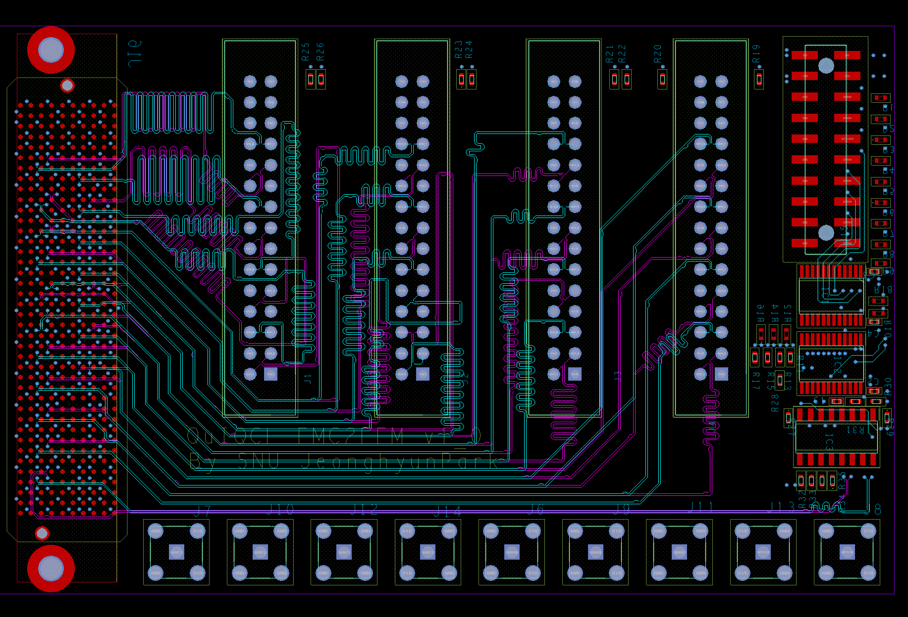

High Speed FMC Router

Daughter board which converts FMC(VITA57.1/4) to EEM. The board includes a feature to short the TDI and TDO signals, allowing the FPGA's JTAG chain to remain intact and function properly even when the FPGA is powered on after installation. It is designed to connect to other boards via the EEM interface used in ARTIQ.
The differential signals are routed with a 100-Ohm differential characteristic impedance and are placed between ground layers to minimize external noise interference. All signals have a mismatch of less than 3mm, and the phase delay of the differential signals is also matched.

The eye diagram analysis using ANSYS SIwave confirmed that the system operates without issues at 1 Gbps.